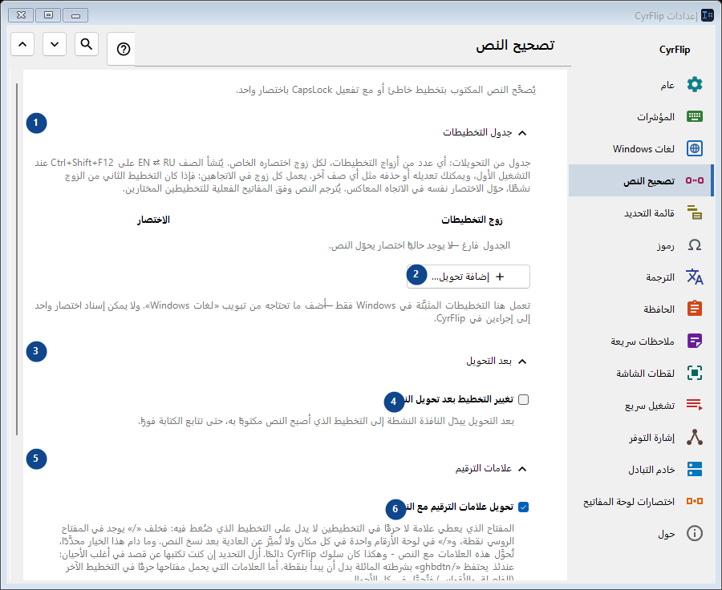
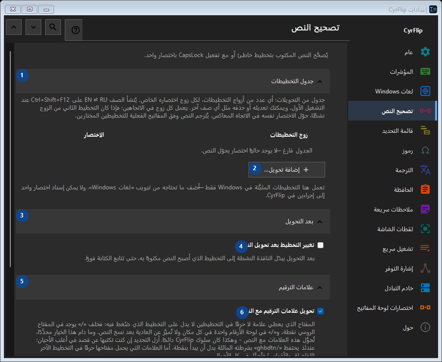

تصحيح النص
الغرض
يُصحَّح النص المكتوب بتخطيط خاطئ أو مع تفعيل CapsLock باختصار واحد.


ترتيب الاستخدام
تُطبق الإعدادات فورًا. لا يوجد ترتيب إلزامي؛ استخدم المجموعات أدناه.
العناصر
1. جدول التخطيطات
استخدم هذا الأمر لتنفيذ الإجراء المذكور. اقرأ أي طلب تأكيد قبل الموافقة.
اختصاراتك2. إضافة تحويل...
استخدم هذا الأمر لتنفيذ الإجراء المذكور. اقرأ أي طلب تأكيد قبل الموافقة.
اختصاراتك3. بعد التحويل
استخدم هذا الأمر لتنفيذ الإجراء المذكور. اقرأ أي طلب تأكيد قبل الموافقة.
اختصاراتك4. تغيير التخطيط بعد تحويل النص
بعد التحويل يبدّل النافذة النشطة إلى التخطيط الذي أصبح النص مكتوبًا به، حتى تتابع الكتابة فورًا.
اختصاراتك5. علامات الترقيم
استخدم هذا الأمر لتنفيذ الإجراء المذكور. اقرأ أي طلب تأكيد قبل الموافقة.
اختصاراتك6. تحويل علامات الترقيم مع النص
المفتاح الذي يعطي علامة لا حرفًا في التخطيطين لا يدل على التخطيط الذي ضُغط فيه: فخلف «/» يوجد في المفتاح الروسي نقطة، و«/» في لوحة الأرقام واحدة في كل مكان ولا تُميَّز عن العادية بعد نسخ النص. وما دام هذا الخيار محدَّدًا، تُحوَّل هذه العلامات مع النص - وهكذا كان سلوك CyrFlip دائمًا. أزل التحديد إن كنت تكتبها عن قصد في أغلب الأحيان: عندئذ يحتفظ «/ghbdtn» بشرطته المائلة بدل أن يبدأ بنقطة. أما العلامات التي يحمل مفتاحها حرفًا في التخطيط الآخر (الفاصلة والأقواس) فتُحوَّل في كل الأحوال.
اختصاراتك7. حالة الأحرف
استخدم هذا الأمر لتنفيذ الإجراء المذكور. اقرأ أي طلب تأكيد قبل الموافقة.
اختصاراتك8. تصحيح CapsLock
يبدّل الأحرف الكبيرة والصغيرة في التحديد؛ مفيد بعد تفعيل CapsLock بالخطأ.
اختصاراتك9. تغيير - تصحيح CapsLock
استخدم هذا الأمر لتنفيذ الإجراء المذكور. اقرأ أي طلب تأكيد قبل الموافقة.
اختصاراتك10. مزامنة CapsLock بعد تصحيح حالة الأحرف
يغيّر الحالة الفعلية لمفتاح CapsLock بعد التصحيح حتى تطابق الضغطات التالية النص المصحَّح.
اختصاراتك